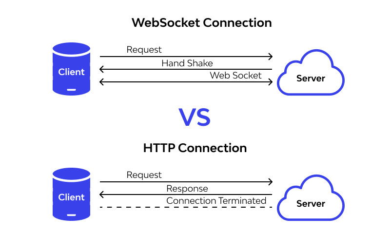

O Procolo WebSocket
| Identificação |
|
| Aluno |
Nicolas Chagas Souza |
| Matrícula |
200042327 |
| Disciplina |
Fundamentos de Redes de Computadores |
| Turma |
01 |
Referencial Teórico
Socket
Um socket fornece um meio de comunicação entre dois processos (Figura 1), ou seja, uma maneira para que eles possam
trocar dados entre si ([1]).
Exemplificação de socket entre duas partes comunicantes. (Fonte: Medium [1])
Geralmente, a comunicação entre dois processos (process A e process B), conforme
ilustra a Figura 2, é feita pelo uso dos seus sockets (X e Y, respectivamente).
 (Fonte: Medium [1])
(Fonte: Medium [1])
Existem dois tipos principais de sockets (Figura 3):
- Unix domain sockets: permitem a comunicação entre processos em um mesmo computador (IPC).
- Internet domain sockets: permitem a comunicação entre processos em uma mesma rede.
Diferença entre os tipos de socket.(Fonte: Medium [1])
WebSocket
O protocolo WebSocket permite uma comunicação bidirecional e full-duplex entre um cliente e um servidor. Conforme
a especificação (RFC 6455 [2]), o protocolo permite a execução de código não confiável, do cliente, em um
ambiente controlado em um servidor, e visa fornecer um mecanismo para aplicações baseadas em navegadores se
comunicarem com servidores sem a necessidade de abrir múltiplas conexões HTTP (como o uso de XMLHttpRequest
ou <iframes>).
O WebSocket foi construído sobre o protocolo TCP, e permite a comunicação em tempo real, composto
(Figura 4) por um handshake de abertura, seguido por trocas de mensagens bidirecionais em uma conexão persistente até
que um dos lados finalize a conexão.
Comunicação cliente servidor via protocolo WebSocket. (Fonte: Wallarm [3])
WebSockets vs HTTP
Os WebSockets são ideais para estabelecer a comunicação entre APIs em contextos que exigem troca contínua e/ou rápida de
dados, como aplicações de tempo real, jogos e aplicações de chats.
Entretanto, esse protocolo não deve ser usado quando não há necessidade de troca de dados em tempo real ou de se manter
a conexão aberta por um longo tempo, sendo o protocolo HTTP mais adequado nesses casos (Figura 5).

Comparativo entre os protocolos HTTP e WebSocket.(Fonte: Wallarm [3])
Prática
A prática desenvolvida visa identificar a diferença de desempenho, metrificados pelo tempo de resposta, na utilização do
protocolo WebSocket, em relação ao HTTP, para múltiplas requisições seguidas, simulando uma conversa entre o cliente e o
servidor, na troca das mensagens: "ping" e "pong".
Configuração do Ambiente
Compõem o experimento dois processos servidores, um HTTP e um WS (WebSocket), e dois processos clientes, HTTP-Client e
WS-Client. O código-fonte para todos os processos foi escrito em python, com o apoio de um script shell para iniciar e
configurar os serviços.
Configuração do Pipenv
Pipfile[[source]]
url = "https://pypi.org/simple"
verify_ssl = true
name = "pypi"
[packages]
websockets = "*"
websocket-client = "*"
requests = "*"
[dev-packages]
[requires]
python_version = "3.11"
Rodando o Serviço
A configuração do ambiente é feita automaticamente pelo script start, desde que o pipenv esteja instalado na
máquina. Para
rodá-lo basta executar o comando chmod+x start && ./start ou /bin/bash start, na pasta files.
| start |
|---|
| #!/bin/bash
# Instala dependências para execução correta do script.
# É necessário ter o pipenv na máquina.
function setup_venv() {
status="$(pipenv verify)" || return 1
if ! [[ $status == **up-to-date** ]]; then
echo "Instalando dependências do Pipfile."
pipenv install
clear
fi
}
function main() {
# Limpa a console.
clear
setup_venv || return 1
# Recupera o IP da máquina de forma dinâmica.
host=$(hostname -I | awk -F ' ' '{print $1}')
# Exporta as variáveis que serão recuperadas no script python.
export host="$host"
export log_level='INFO'
# Roda com os argumentos ($@).
# Esses argumentos são passados para os inputs automaticamente.
pipenv run python main "$@"
}
main "$@" || {
echo "Error. Aborting."
exit 1
}
|
Código-Fonte
O código fonte foi organizado em pacotes python, seguindo a seguinte estrutura:
├── main
│ # Pacote destinado aos clientes.
│ ├── clients
│ │ ├── __init__.py
│ │ ├── http_client.py
│ │ └── ws_client.py
│ ├── __init__.py
│ ├── __main__.py
│ # Pacote destinado aos servidores.
│ ├── servers
│ │ ├── http_server.py
│ │ ├── __init__.py
│ │ └── ws_server.py
│ # Pacote com funções utilitárias.
│ └── utils
│ └── __init__.py
Pacote principal
O entrypoint do script encontra-se no arquivo files/main/__main__.py.
| __main.py__ |
|---|
| import datetime
import sys
from multiprocessing import Process
from typing import Callable
from utils import logger, get_env, format_results
from servers import serve_ws, serve_http
from clients import http_connect, ws_connect
# Função utilitária para recuperar entrada ou ler dos sys.args
def get_input(prompt: str) -> str:
global arg
try:
arg += 1
return sys.argv[arg - 1]
except IndexError:
return input(prompt)
def get_option() -> int:
return int(
get_input('Choose quantity of pings to run [-1 to exit]: '))
def run_option(desc: str, server: Process,
client: Callable) -> dict:
global d, pings
d['qt_pings'] = pings
play = desc.lower()
if not server.is_alive():
logger.debug(f'Starting server to {play}')
server.start()
c = Process(target=client, kwargs=d)
logger.debug(
f'Starting client to {play[:-2]} with {pings} pings.')
start = datetime.datetime.now()
c.start()
c.join()
end = datetime.datetime.now()
result = {
'server': server.name,
'qt_pings': d['qt_pings'],
'start': start.isoformat(),
'end': end.isoformat(),
'duration': end - start,
}
logger.info(f'Finished run. Results: {result}')
return result
def main():
global d
results = []
logger.setLevel(d['log_level'])
logger.debug(
f'Running with args: '
f'{" ".join([f"{k}={v}" for k, v in d.items()])}.')
ops = [
{
'desc': 'Play ping pong with WS.',
'server': Process(target=serve_ws, kwargs=d, name='WS'),
'client': ws_connect
},
{
'desc': 'Play ping pong with HTTP.',
'server': Process(target=serve_http, kwargs=d, name='HTTP'),
'client': http_connect
},
]
try:
global pings
pings = get_option()
while pings != -1:
for op in ops:
results.append(run_option(**op))
pings = get_option()
except Exception as e:
logger.error(e)
raise Exception(e)
finally:
for s in [d['server']
for d in ops if d['server'].is_alive()]:
logger.info(f'Stopping process: {s.name}.')
s.kill()
return results
if __name__ == '__main__':
pings = 50
arg = 1
d = get_env()
rs = main()
table = format_results(rs)
with open('report.md', 'w', encoding='utf-8') as report:
report.write('\n'.join(table))
|
Configuração dos Servidores
Os clientes encontram-se no módulo files/main/servers.
| servers/http_server.py |
|---|
| from http.server import BaseHTTPRequestHandler
from socketserver import TCPServer
from utils import http_logger as logger, get_reply, str_from_header
# Classe que recebe e responde às requisições HTTP, com métodos GET e POST
# implementados.
class HTTPHandler(BaseHTTPRequestHandler):
def do_GET(self):
self._log_request_info('GET')
self.send_response(200)
self.send_header('Content-type', 'text/plain')
self.end_headers()
self.wfile.write(b'Hello, HTTP!')
def do_POST(self):
self._log_request_info('POST')
# Recupera a quantidade de caracteres para ler do quadro
# enviado.
content_length = int(
self.headers.get('Content-Length'))
data = self.rfile.read(
content_length).decode('utf-8')
logger.info(f"Received POST data: {data}")
self.send_response(200)
self.send_header('Content-type', 'text/plain')
self.end_headers()
self.wfile.write(get_reply(data).encode('utf-8'))
def _log_request_info(self, method: str):
logger.info(
f'Method: {method}. Request headers: '
f'{str_from_header(self.headers)}')
def serve_http(host: str, http_port: int, **kwargs):
httpd = TCPServer((host, http_port), HTTPHandler)
logger.info(
f'Starting HTTP server at port: {http_port}')
httpd.serve_forever()
|
| servers/ws_server.py |
|---|
| import asyncio
from websockets import WebSocketServerProtocol, serve
from utils import ws_logger as logger, get_reply, str_from_header
# Função assíncrona para receber e responder às requisições via
# WebSocket.
async def ws_handler(websocket: WebSocketServerProtocol, path: str):
logger.info(
f'Client connected. Request headers: '
f'{str_from_header(websocket.request_headers)}')
# Mantém a conexão ativa.
while True:
try:
data = await websocket.recv()
logger.info(f"Received data: {data}")
await websocket.send(get_reply(data))
except Exception as e:
logger.info(f'Connection terminated. [{e}]')
break
def serve_ws(host: str, ws_port: int, **kwargs):
logger.info(
f'Starting WebSocket server at port: {ws_port}')
loop = asyncio.new_event_loop()
asyncio.set_event_loop(loop)
ws_server = serve(ws_handler, host, ws_port)
loop.run_until_complete(ws_server)
loop.run_forever()
|
| servers/__init__.py |
|---|
| from .http_server import serve_http
from .ws_server import serve_ws
|
Configurações dos Clientes
Os clientes encontram-se no módulo files/main/clients.
| clients/http_client.py |
|---|
| import requests
from utils import client_logger as logger
def http_connect(host, http_port: int,
qt_pings: int, **kwargs):
logger.info("Playing ping pong with HTTP.")
url = f'http://{host}:{http_port}'
sent = 0
logger.debug(f'Verifying if server is up...')
r = requests.get(url)
if not r.ok:
raise Exception(r.content.decode)
for x in range(qt_pings):
r = requests.post(url, f"Ping{x}")
result = r.content.decode()
logger.info(f"Received {result}.")
sent += 1
assert sent == qt_pings
logger.debug(f'Sent {sent} pings. Finishing test.')
|
| clients/ws_client.py |
|---|
| from websocket import WebSocket
from websocket import create_connection
from utils import client_logger as logger
def ws_connect(host: str, ws_port: int,
qt_pings: int = 5, **kwargs):
logger.info("Playing ping pong with WebSocket:")
url = f'ws://{host}:{ws_port}'
ws = None
try:
logger.info(f'Creating connection on {url}.')
ws: WebSocket = create_connection(url)
while not ws or not ws.connected:
logger.info(f'Waiting connection...')
except ConnectionRefusedError as e:
logger.info(f'{e}')
sent = 0
try:
for x in range(qt_pings):
if ws.connected:
ws.send(f"Ping {x}!")
result = ws.recv()
logger.info(f"Received {result}.")
sent += 1
ws.close()
assert sent == qt_pings
logger.info(
f'Sent {sent} pings. Closing connection.')
except Exception as e:
raise Exception(e)
|
| clients/__init__.py |
|---|
| from .http_client import http_connect
from .ws_client import ws_connect
|
Módulo de Utilitários
| utils/__init__.py |
|---|
| import logging
import socket
from os import environ
# Setup logger
logging.basicConfig(
format="[%(levelname)s %(asctime)s] (%(name)s): %(message)s",
level=logging.INFO,
datefmt="%H:%M:%S")
logger = logging.getLogger('main')
http_logger = logging.getLogger('HTTP')
ws_logger = logging.getLogger('WS')
client_logger = logging.getLogger('CLIENT')
def get_reply(data: str):
if "ping" in data.lower():
return 'Pong!'
return f'Data {data} received successfully.'
def str_from_header(headers) -> str:
h = dict(headers)
return '; '.join([f'{k}: {h.get(k)}' for k in h.keys()])
def get_env() -> dict:
try:
host = str(environ['host'])
soc = socket.socket(socket.AF_INET, socket.SOCK_STREAM)
soc.bind(('', 0))
ws_port = soc.getsockname()
soc_http = socket.socket(socket.AF_INET, socket.SOCK_STREAM)
soc_http.bind(('', 0))
http_port = soc_http.getsockname()
return {'host': host,
'ws_port': ws_port[1],
'http_port': http_port[1],
'log_level': environ['log_level'].upper()}
except KeyError as e:
logger.error(f'Provide value for {e}.')
def format_results(results: list[dict]):
if not len(results):
return
table = []
max_widths = [max(len(str(k)), len(str(v)))
for k, v in results[0].items()]
headers = [key.replace("_", " ")
.capitalize()
.ljust(max_widths[i])
for i, key in enumerate(results[0].keys())]
header = '|' + ' | '.join(headers) + '|'
separators = '|' + \
' | '.join(['-' * x for x in max_widths]) + '|'
print(header)
print(separators)
table += [header, separators]
for r in results:
row = '|' + \
' | '.join(str(value).ljust(max_widths[i])
for i, value in enumerate(r.values())) + '|'
print(row)
table.append(row)
return table
|
Execução
Os argumentos fornecidos para o script são repassados para o módulo main do python, dessa forma, é possível executar os
testes passando as entradas desejadas separadas por espaços. O comando /bin/bash start 4 80 100 -1 testa os servidores
com 4, 80 e 100 pings, em seguida finaliza os testes.
Para obtenção de resultados mais significativos, o teste foi realizado com 1000, 5000, 10000 e 200000 requisições.
bin/bash files/start 1000 5000 10000 200000 -1
Resultados Obtidos
Os resultados obtidos foram registrados na tabela 1, presente também no arquivo files/results.md.
| Server |
Qt pings |
Start |
End |
Duration |
| WS |
1000 |
2023-12-02T13:56:12.480478 |
2023-12-02T13:56:12.786565 |
0:00:00.306087 |
| HTTP |
1000 |
2023-12-02T13:56:12.787987 |
2023-12-02T13:56:14.529089 |
0:00:01.741102 |
| WS |
5000 |
2023-12-02T13:56:14.529554 |
2023-12-02T13:56:15.701015 |
0:00:01.171461 |
| HTTP |
5000 |
2023-12-02T13:56:15.701424 |
2023-12-02T13:56:24.817563 |
0:00:09.116139 |
| WS |
10000 |
2023-12-02T13:56:24.818105 |
2023-12-02T13:56:27.183849 |
0:00:02.365744 |
| HTTP |
10000 |
2023-12-02T13:56:27.184353 |
2023-12-02T13:56:43.496875 |
0:00:16.312522 |
| WS |
200000 |
2023-12-02T13:56:43.497272 |
2023-12-02T13:57:41.734733 |
0:00:58.237461 |
| HTTP |
200000 |
2023-12-02T13:57:41.735176 |
2023-12-02T14:03:43.133729 |
0:06:01.398553 |
Resultados obtidos.
Considerações Finais
A partir dos resultados obtidos (Tabela 1), foram realizados os cálculos de diferença de desempenho conforme a
quantidade de requisições e os resultados obtidos (Tabela 2).
| Qtde de Pings |
Duração WS (s) |
Duração HTTP (s) |
Diferença (HTTP - WS) (s) |
| 1000 |
0.306087 |
1.741102 |
1.435015 |
| 5000 |
1.171461 |
9.116139 |
7.944678 |
| 10000 |
2.365744 |
16.312522 |
13.946778 |
| 200000 |
58.237461 |
361.398553 |
303.161092 |
Resultados formatados.
Os resultados da tabela 2 foram representados graficamente (Figura 6), evidenciando a disparidade no desempenho dos
protocolos para muitas requisições sequenciais.
Gráfico comparativo entre a duração das requisições. (Fonte: autoria própria)
Os resultados obtidos reforçam a eficiência do protocolo websockets no contexto de comunicação em tempo real. O padrão
linear de crescimento da diferença de desempenho também indica que quanto menor o número de requisições, menor a
diferença de desempenho, sendo assim o protocolo HTTP mais adequado.
Referências
[1] MOL, Marcos. Getting Started with Unix Domain Sockets. Medium, [S.l.], [s.d.]. Disponível em: https://medium.com/swlh/getting-started-with-unix-domain-sockets-4472c0db4eb1. Acesso em: 02 dez. 2023.
[2] IETF. RFC 6455 - The WebSocket Protocol. [S.l.], [s.d.]. Disponível em: https://datatracker.ietf.org/doc/html/rfc6455. Acesso em: 02 dez. 2023.
[3] WALLARM. WebSocket vs HTTP: How Are These 2 Different?. [S.l.], [s.d.]. Disponível em: https://www.wallarm.com/what/websocket-vs-http-how-are-these-2-different. Acesso em: 02 dez. 2023.
[4] TANENBAUM, Andrew S.; WETHERALL, David J. Redes de Computadores. 5. ed. [Local de Publicação]: Editora, Ano.
[5] MOZILLA. WebSockets API. [S.l.], [s.d.]. Disponível em: https://developer.mozilla.org/en-US/docs/Web/API/WebSockets_API. Acesso em: 02 dez. 2023.
[6] WHATWG. The WebSocket Interface. [S.l.], [s.d.]. Disponível em: https://websockets.spec.whatwg.org/#the-websocket-interface. Acesso em: 02 dez. 2023.